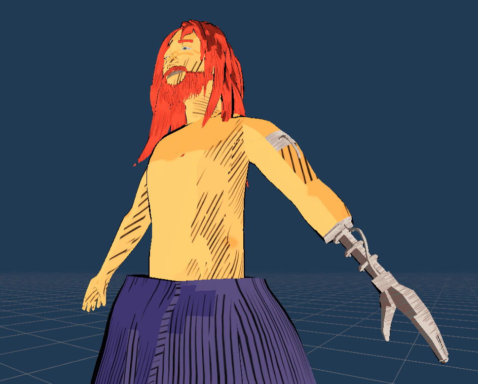
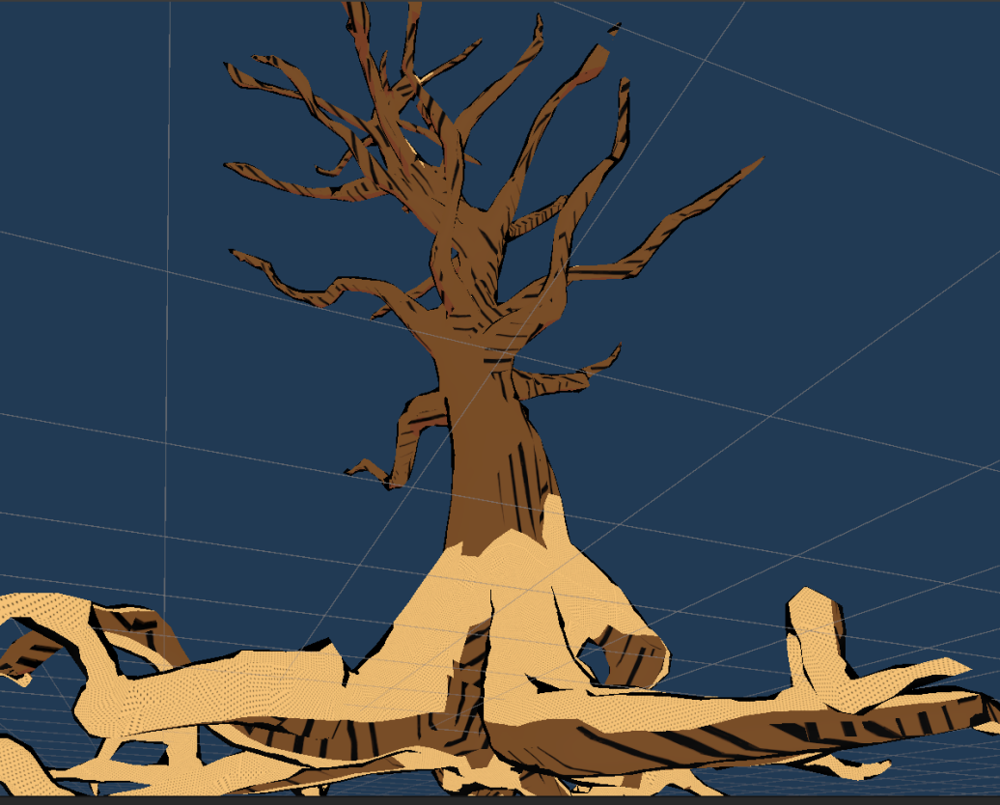
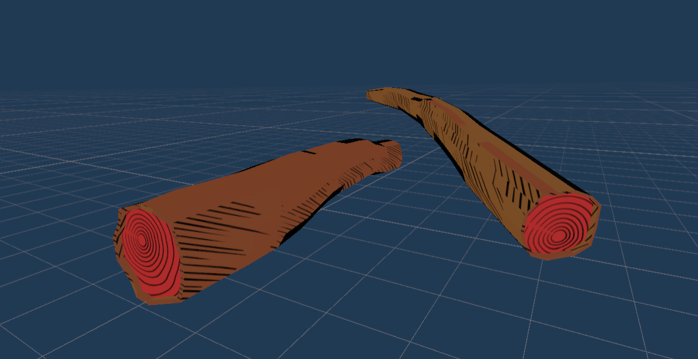

Gamedev log 1# - First take on blogging?
Hello fellow devs and fans of steampunk and magic!
Sooo… this is my first gamedev post i guess. I am certainly excited but also a bit scared. Primarly of my ability to leave things before they get finished (this applies just to gamedev luckily). Anyways first things first. This is gonna be a take on my documentary of my game development. My english is OK, but definitely not perfect, so please accept my apologies. On my blog i will try to add a post per week. However i am extencively working on this website, my own game and other designer projects. So it might be quite some time before things get settled. Back to my game. Right now i am using Unity Engine, while creating my models in Blender. I am focused on design and 3D, my programming is not so good- Atleast not on the level that i could do the whole game myself. So YEA I DO USE ASSETS :) Sorry mum. Today i have got just couple screens from my early development. If you are insterested, please stay tunned.
Basic models of humanoid character:

TIP: And yea… there is also something usefull!?
To develop my game i am using a 3rd party asset to Unity, which greatly increases my chances of finishing this project. I will do my best while utilizing this tool but keeping the game as originial as possible. And i will develop my own mechanics. Dont worry. The reason why i do use this asset is because i have no clue about multiplayer and this asset is supposed to get a support for it in the future. Since online database and other complicated stuff is too overwhelming for me, this is only solution viable. Please refrain from commenting about this, if you are not recognized indie, solo-developer yourself and you have zero clue about this problematics. THE ASSET - RPG BUILDER
Anyhow here i include couple more images from development. You can see the unique art style and shader work (in progress). I will be doing a solo post about shaders in the future. Stay tunned!

